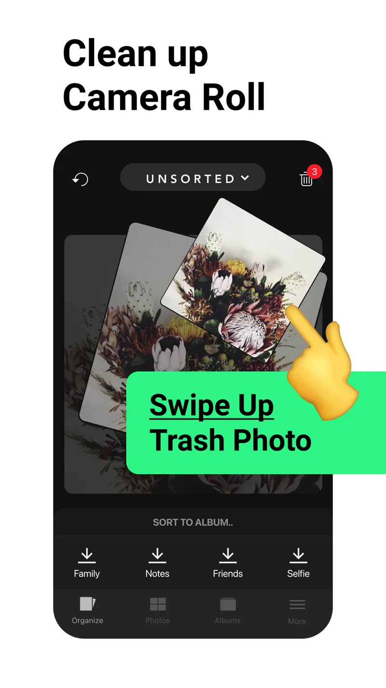

Slidebox Review: Is It the Right Photo Organizer for You?
Quick answer: Slidebox is worth considering if your main job is sorting photos into albums while deciding what to delete. It works with your iPhone photo library and offers a free download with paid options. Check the current purchase screen before committing, and evaluate a small batch using the checklist below.
You sort thirty photos into albums, then open the main library and see the same thirty photos again. It is easy to mistake that for a failed cleanup. Before choosing an organizer, separate the job of filing keepers from the job of deleting unwanted images.
Disclosure: I make Screenshot Swipe. This review is based on Slidebox’s official website, FAQ, and current US App Store listing, checked September 21, 2026. It is a source-based assessment, not a claim of hands-on testing.
What does Slidebox do?

Slidebox’s published interface combines a photo review card with album shortcuts. Image: Slidebox.
Slidebox centers on gestures: swipe up to queue a photo for trash and tap an album to file a keeper. Its official materials also describe favorites, undo, and comparing similar photos. The app fits a deliberate sorting session where you make each decision yourself.
Platform: iPhone and iPad App Store · US rating: 4.8 out of 5 from 16,525 ratings. Rating and count were checked through Apple’s lookup API on September 21, 2026.
That gives it a substantial review history. A rating still cannot tell you whether album sorting is the missing piece in your own routine. The useful test is whether you can file images into categories you will actually revisit.
Is Slidebox free, or do you need a subscription?
The App Store lists Slidebox as free to download with in-app purchases. Its description advertises monthly and annual subscriptions as well as a one-time purchase option. Read the plan, renewal terms, and included features on the purchase screen; available offers and prices can vary.
Do not base the decision on an old review quoting a one-time price. Start a small sorting session, note any limits you encounter, and decide whether the available free access is sufficient. Only pay when you can name the particular restriction you want to remove.
What happens to albums and deleted photos?
Slidebox’s official FAQ explains that albums it creates correspond to albums in your iOS photo library. Filing a keeper can therefore fit your existing Photos organization. Confirm the result by opening the same album in Photos after a short session.
Deleting from the photo library is a separate action. With iCloud Photos enabled, library deletions also apply across devices using that library. Apple describes the recovery window in its photo-deletion guide. Review the queue before confirming a bulk action.
Who is Slidebox best suited to?
My recommendation is to try it when your categories are already clear: family trips, pets, home projects, or work reference photos. Album buttons can remove repeated navigation from that job. A small set of useful albums is a better starting point than a complicated folder plan.
For screenshots, test whether an album alone carries enough context. A saved product might need a price note; an event announcement might need a reminder. If those details are your main problem, use the photo-notes guide and screenshot-reminder guide to compare the workflow you need.
The current listing emphasizes sorting and cleanup. It does not establish that Slidebox provides the same screenshot-note and reminder workflow as a dedicated screenshot organizer. Evaluate the functions you need directly before choosing based on a broad “organizer” label.
How should you evaluate it before paying?
- Pick twenty expendable test photos or recent images you know well.
- Choose two albums, file several keepers, and queue only obvious rejects.
- Open Photos to confirm where the keepers appear.
- Write down the free-tier limits and the purchase option actually shown to you.
Judge the result by retrieval: can you find a particular keeper a day later? If the answer is yes and the sorting felt sustainable, the app is addressing a real need. If the image still lacks the reason you saved it, add a context step before scaling up.
What else should you know?
Is Slidebox completely free?
It is free to download and offers in-app purchases. The current App Store description includes subscriptions and a one-time purchase option. Treat the purchase screen as the place to verify what your offer includes, and try a small sorting session before assuming that every feature is available without payment.
Does Slidebox move my photos out of Apple Photos?
Its official FAQ says that albums created in Slidebox correspond to albums in the iOS photo library. That makes Photos a useful place to check the outcome of a sorting session. Open an album there after filing a few test images so you understand where your keepers appear.
Is Slidebox still being updated?
The US Apple lookup API returned version 26.913.0, released September 18, 2026, when checked for this review. That is a current release, so old descriptions suggesting the app is abandoned should be treated cautiously. Check the version history again when you make your own download decision.
Is Slidebox useful for screenshots?
It can fit screenshots that you want to sort into albums. The next question is whether filing alone solves your problem. If a screenshot needs an explanation or a due date, include a note or reminder in your process, and evaluate tools according to those specific needs.
How can you decide whether to keep using Slidebox?
- Try one small album-sorting session using the free download.
- Verify the result in Photos and retrieve a keeper the next day.
- Compare any purchase against the precise limitation you encountered.
Try a review with your own screenshots.
Screenshot Swipe is free to start. Keep useful captures with notes, tags, and reminders. Start with the free manual review features.
Download on theApp Store